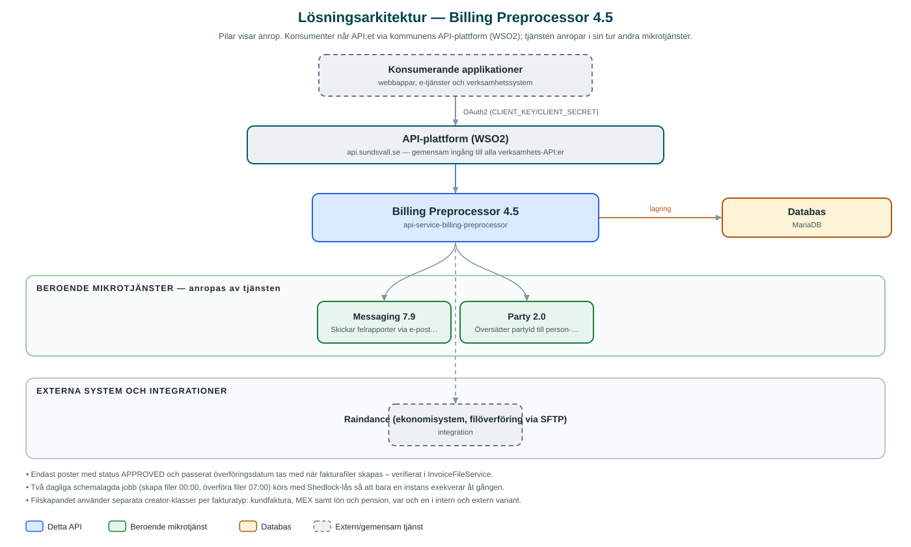

Billing Preprocessor
Samlar in och lagrar fakturaunderlag från kommunens verksamhetssystem och genererar fakturafiler som förs över till ekonomisystemet Raindance.
Om API:et
Billing Preprocessor är kommunens gemensamma mellansteg mellan verksamhetssystemen och ekonomisystemet Raindance. Applikationer registrerar fakturaposter (billing records) med tillhörande konteringsinformation via API:et, och varje post följer en statuskedja – ny, godkänd, fakturerad eller avvisad.
Godkända poster plockas upp av ett schemalagt jobb som genererar fakturafiler i de filformat Raindance förväntar sig, med separata filskapare för interna och externa fakturor inom bland annat kundfakturering, mark- och exploatering (MEX) samt lön och pension. Ett andra jobb för sedan över de färdiga filerna till Raindance via SFTP.
API:et erbjuder även sökning och filtrering av fakturaposter samt möjlighet att trigga fil- och överföringsjobben manuellt. Vid fel i filgenerering eller överföring skickas en HTML-formaterad felrapport via e-post till konfigurerade mottagare.
Det här gör API:et
- Fakturaposter med status – Registrering, uppdatering och läsning av fakturaposter med konteringsinformation och statusflöde (ny, godkänd, fakturerad, avvisad).
- Generering av fakturafiler – Schemalagt jobb som skapar fakturafiler av godkända poster, med separata format för interna och externa fakturor per verksamhetstyp.
- Överföring till Raindance – Färdiga fakturafiler förs över till ekonomisystemet Raindance via SFTP i ett separat schemalagt jobb.
- Sökning och filtrering – Fakturaposter kan sökas fram med flexibla filteruttryck och paginering.
- Manuell jobbkörning – Fil- och överföringsjobben kan triggas på begäran via API:ets jobbresurser.
- Felrapportering – Fel vid filskapande eller överföring sammanställs och skickas som e-postrapport till konfigurerade mottagare.
API-dokumentation
API:ets samtliga resurser, parametrar och datamodeller finns beskrivna i en OpenAPI-specifikation som är hämtad ur källkodsförrådet. Den kan utforskas interaktivt i Swagger UI eller laddas ner som YAML.
Teknisk dokumentation
Nedan beskrivs hur tjänsten är uppbyggd, vilka andra tjänster den anropar och vad som krävs för att driftsätta den. Informationen är härledd ur källkoden och dess konfiguration på GitHub.
Arkitektur

API:et är en mikrotjänst (Java 25, Spring Boot via kommunens gemensamma tjänsteplattform dept44 (8.0.8), byggd med Maven). Konsumenter når tjänsten via kommunens gemensamma API-plattform (WSO2) på api.sundsvall.se – tjänsten anropas aldrig direkt. Tjänsten anropar i sin tur andra mikrotjänster i kommunens tjänstelandskap. Lagring: MariaDB med Flyway-migrationer; lagrar fakturaposter, kontering, filkonfiguration och genererade fakturafiler. Övriga integrationer som förekommer i koden: Raindance (ekonomisystem, filöverföring via SFTP).
Teknikstack
- Språk: Java 25
- Ramverk: Spring Boot via kommunens gemensamma tjänsteplattform dept44 (8.0.8), byggd med Maven
- Databas: MariaDB med Flyway-migrationer; lagrar fakturaposter, kontering, filkonfiguration och genererade fakturafiler
- Övrigt: Spring Integration SFTP för filöverföring, schemalagda jobb med Shedlock-låsning, spring-filter för sökuttryck
Beroenden till andra mikrotjänster
Tjänsten anropar följande mikrotjänster. Versionerna är hämtade ur källkodens integrationsklienter.
| Tjänst | Version | Användning |
|---|---|---|
| Messaging | 7.9 | Skickar felrapporter via e-post när generering eller överföring av fakturafiler misslyckas. |
| Party | 2.0 | Översätter partyId till person- eller organisationsnummer när fakturafiler skapas. |
Konfiguration och driftsättning
- application.yml med URL och OAuth2-klientuppgifter för Messaging och Party
- MariaDB-anslutning; databasschemat versionshanteras med Flyway
- SFTP-anslutningsuppgifter till Raindance per kommun
- Cron-scheman för de två jobben: filskapande (00:00) och filöverföring (07:00)
- Mottagare och mallar för felrapport-e-post
Noterbart ur källkoden
- Endast poster med status APPROVED och passerat överföringsdatum tas med när fakturafiler skapas – verifierat i InvoiceFileService.
- Två dagliga schemalagda jobb (skapa filer 00:00, överföra filer 07:00) körs med Shedlock-lås så att bara en instans exekverar åt gången.
- Filskapandet använder separata creator-klasser per fakturatyp: kundfaktura, MEX samt lön och pension, var och en i intern och extern variant.
- Vid fel skickas en HTML-formaterad felrapport med exekveringens request-id via Messaging-tjänsten.
Källkod
Källkoden är öppen och finns hos Sundsvalls kommun på GitHub. I källkodsförrådet finns även instruktioner för att klona, konfigurera och starta tjänsten i egen miljö.